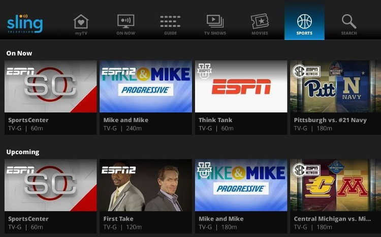
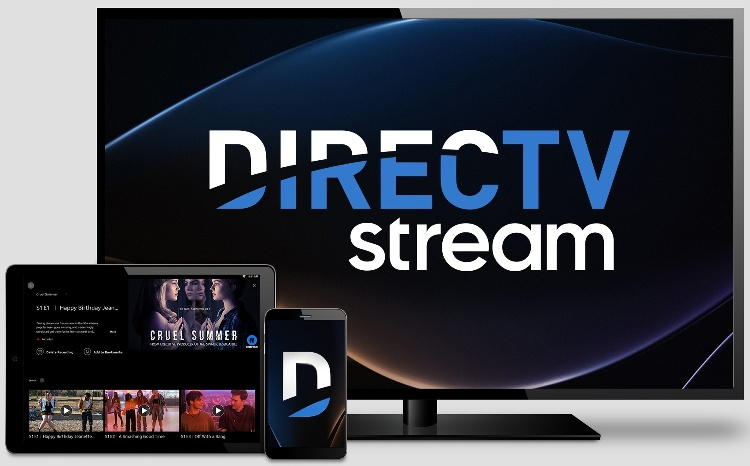
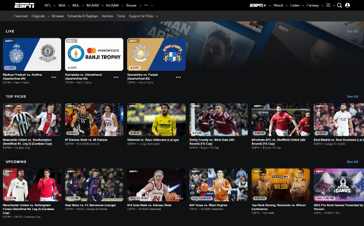
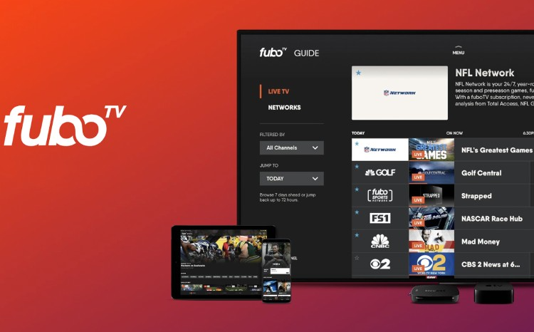
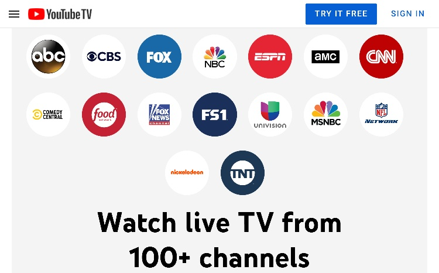
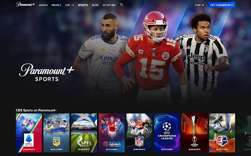
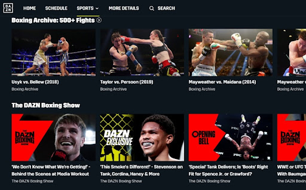
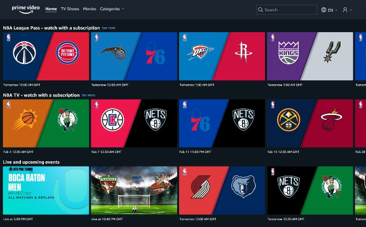

TV streaming, and sports streaming in particular, has been growing in popularity over the past few years. According to Nielsen, last year, streaming overtook cable for viewership.
There are premium sports streaming services like DirecTV Stream available with hundreds of channels, and more specialized sports streaming sites like DAZN. This wide range of TV services means you can choose a service that fits your interests and requirements.
With so many choices available, deciding exactly what’s on offer and which service you should choose can be confusing. We tested and reviewed the top 10 best sports streaming sites to help you choose the right one for you.
Our Top 10 Best Sports Streaming Services in 2026:
- Sling TV - Best sports streaming service overall
- Hulu Plus Live TV - Best for family entertainment
DirecTV Stream - Best for wide selection of sports channels
ESPN Plus - Best for UFC coverage
fuboTV - Best for international sports
YouTube TV - Best for 4K streaming
Paramount Plus - Best for PGA Tour fans
Peacock - Sunday Night Football and Premier League soccer
DAZN - Best for Boxing and MMA fans
Amazon Prime Video - Best for Thursday Night Football
A Closer Look into the Top 10 Best Sports Streaming Services - Reviews:
1. Sling TV
Great overall package with additional sports streaming channels

Price per month: $40-$55+ (excluding add-ons)
Sports available: NFL, NBA, NHL, golf, tennis, wrestling
Number of channels: 47+
Free trial: Occasional offers
Sling TV has three base packages: Orange, Blue, and the two combined in Orange and Blue. Sling TV suggests going with Orange if you are an NBA fan, while Blue is better for college basketball and sports fans generally. Another difference is you can watch on up to three devices simultaneously with the Blue package but only one device when watching with the Orange package.
One benefit of Sling TV that we particularly like is the ability to customize your subscription rather than pay for channels you don’t need. Sports fans should consider the $11 sports channel add-on, which includes beIN Sport, ESPN Bases Loaded, NBA TV, NFL RedZone (already included with Sling Blue), and NHL Network. For boxing fans, Showtime is available for $10 per month.
Why we chose Sling TV: The customization options enable you to tailor the subscription that suits you.
Pros
Great selection of add-on channels
Wide range of other entertainment channels available
Free tier available
Cons
Poor reviews on Trustpilot
Lack of regional sports channels
2. Hulu Plus Live TV
Stream a mix of live sports and on-demand shows
Price per month: $69.99
Sports available: NBA, NCAA, NFL, NHL
Number of channels: 65
Free trial: One month
Hulu Plus Live TV is Hulu’s premium service. It comes with ESPN Plus for access to UFC content and international soccer. There’s a good range of sports included, but for an additional $9.99 per month, you’ll receive a few extra channels, including NFL RedZone, motorsports (MAVTV), and horse racing (FanDuel TV/FanDuel Racing).
We like that Disney+ is also bundled with the subscription making Hulu Plus Live TV a good option if you have kids or are a kid at heart. If you want to try out Hulu, there’s a generous one-month trial available, but this only gives you access to its basic on-demand content.
Why we chose Hulu Plus Live TV: It’s a great option for casual sports fans who also want on-demand shows.
Pros
Available on a wide range of devices
Unlimited DVR
One-month free trial
Cons
Stream only two devices at a time without paying extra
Missing some league-specific channels
Read the full Hulu Plus Live TV Review
3. DirecTV Stream
Comprehensive subscription service ideal for dedicated sports fans

Price per month: $69.99-$149.99
Sports available: MLB, NBA, NFL, NHL, golf, soccer
Number of channels: 150+
Free trial: Five days
DirecTV Stream has a strong lineup of sports, especially when subscribing to one of its higher-tier packages. It’s one of the best options on our list for NBA and NHL fans. We liked how it even comes with Showtime included for free for the first three months of your subscription.
Despite it not including the NFL Network for the 2022-2023 season, we feel there is so much available across the rest of the service that DirecTV Stream is still the best choice for most sports fans.
You can watch unlimited streams at home and get unlimited cloud storage for DVR. Just be aware recordings expire after nine months. Although the service isn’t cheap for casual sports fans, if you’re serious about sports and looking for a comprehensive selection of coverage, including regional sports networks (RSNs), DirecTV Stream is a great choice.
Why we chose DirecTV Stream: For its unlimited streaming and wide selection of sports channels, including RSNs.
Pros
Fantastic selection of sports
Record up to three channels at the same time
Five-day free trial
Cons
Poor reviews on Trustpilot
Expensive for casual sports fans
Read the full DirecTV Stream Review

4. ESPN Plus
The only place to watch the UFC’s PPV events

Price per month: $9.99
Sports available: Cricket, NHL, PPV UFC, soccer, tennis
Number of channels: N/A
Free trial: No
ESPN Plus is a stand-alone specialist sports subscription. Rather than being separated into channels, you simply select the live event you want to watch. You don’t get access to any other ESPN channels, but you do have access to additional sports content like the “30 for 30” documentary series.
ESPN Plus is a must-have for UFC fans as it gives you access to out-of-market NHL games and is also great for international sports. Soccer fans can catch games from La Liga, the Bundesliga, and the English FA Cup. There’s the Indian Premier League available for cricket fans, while tennis fans can watch the complete Grand Slam of the US and Australian Opens and Wimbledon.
Why we chose ESPN Plus: For its UFC PPV events and its great overseas sports coverage.
Pros
Exclusive live events
Original content, including sports documentaries
Offline downloads for mobile devices
Cons
Does not include other ESPN channels
No free trial
Read the full ESPN+ Stream Review
5. FuboTV
International sports channels, including Spanish-language live sports

Price per month: $74.99-$94.99
Sports available: MLB, MLS, NFL, NBA, NASCAR, international soccer, golf
Number of channels: 221+
Free trial: Seven days
fuboTV has a range of premium and international sports channels, giving you a wide variety of sports content. We think it’s a great choice for European soccer, NASCAR, and regional RSNs, but it lacks TBS and TNT, which may be an issue for basketball fans.
It offers a Latino package, which enables you to stream Spanish-language TV. You can even purchase add-ons to watch French, Italian, and Portuguese language channels.
fuboTV also has a strong lineup of news and entertainment channels, and you can stream on three to 10 devices, depending on which plan you choose. When you combine that with enough cloud DVR space for over 1000 hours of content, fuboTV is ideal for families.
Why we chose fuboTV: For its excellent coverage of international sports, particularly soccer. We also chose it for its Spanish-language live sports.
Pros
Lots of international sports coverage
Spanish-language sports channels
Large DVR storage capacity
Cons
Quite expensive
Some live streams are limited to 720p
6. YouTube TV
Stream sports live in 4K

Price per month: $64.99
Sports available: MLB, NFL, NBA, golf, soccer, tennis
Number of channels: 85+
Free trial: 14 days
YouTube TV comes with all the main sports networks and covers an enormous range of sports. There’s a sports add-on costing $10.99, which includes NFL RedZone and beIN sports. YouTube TV isn’t just a sports streaming service, you get access to plenty of news and entertainment channels as well.
With some competitors still streaming at 720p, YouTube TV offers a massive 4K resolution streaming add-on for $19.99. There's also unlimited DVR space, so you can catch up on anything you’ve recorded within the last nine months. YouTube TV has a 14-day free trial at the time of writing, although this often changes to seven or 21 days.
Why we chose YouTube TV: The 4K Plus streaming add-on enables you to watch sports in the best resolution possible.
Pros
4K streaming add-on
Six accounts to share with your family
Unlimited DVR space
Cons
Lacks international channels and some RSNs
Expensive if including add-ons
7. Paramount Plus
Affordable plan for golf and soccer fans

Price per month: $4.99-$14.99
Sports available: NFL, golf, soccer
Number of channels: 20+
Free trial: Seven days
One of the cheapest subscription services on our list, Paramount Plus provides a small selection of sports streaming options alongside its on-demand streaming. The main sports are select PGA Tour events, NFL games broadcast on CBS, and the UEFA Champions League live streams.
Whether Paramount Plus is the right choice for you depends on the sports you follow. If you’re not after the overwhelming range of options provided by more expensive sites, Paramount Plus can be an affordable option covering both sports streaming and on-demand entertainment content.
Why we chose Paramount Plus: It’s a great budget-friendly option for golf and soccer fans.
Pros
International soccer and PGA Tour golf
Good value for money
Seven-day free trial
Cons
Limited sports selection
Fewer original shows than other on-demand services
Read the full Paramount Plus Review
8. Peacock
Affordable Premier League soccer and Sunday Night Football
Price per month: $4.99-$9.99
Sports available: Indycar, rugby, soccer, WWE
Number of channels: 60+
Free trial: No
If you’re looking for a budget option that enables you to watch some of the less popular sports, then Peacock is worth considering. While other services prioritize basketball, football, and hockey, on Peacock, you’ll find figure skating, horse racing, and super motocross. While this isn’t the best streaming service for everyone, for some, Peacock will tick all the right boxes.
There’s no free trial for Peacock, but you can try a limited free tier containing on-demand content. For live sports streaming, though, you’ll need to pay. The $4.99 plan unlocks the content, but if you want offline downloads and to watch ad-free, you’ll need to choose the $9.99 Premium Plus plan.
Why we chose Peacock: It’s affordable and has a great selection of niche sports.
Pros
Only $4.99 per month (with ads)
Live sport & on-demand entertainment
User-friendly interface
Cons
Limited sports overall
Poor customer reviews
9. DAZN
Boxing and MMA content you won’t find anywhere else

Price per month: $19.99
Sports available: Boxing, darts, MMA, snooker
Number of channels: N/A
Free trial: No
DAZN is not necessarily the right choice for everyone, but when people think about streaming combat sports, DAZN comes top of the list. It has exclusive fights, MMA, and boxing coverage, and, for boxing fans, there are 30 years of classic fights available in its archive.
DAZN isn’t just for fight fans, though. It has coverage of darts, snooker, and extreme sports such as parkour, skateboarding, and motocross. If you follow women’s soccer, you’ll also be able to watch UEFA Women’s Champions League.
Why we chose DAZN: It’s the streaming service of choice for fight fans across the US.
Pros
Fantastic boxing and MMA content
Exclusive fights
Extreme sports coverage
Cons
Only 720p for live streams
Limited mainstream sports
10. Amazon Prime Video
Sports streaming combined with other Amazon perks

Price per month: $6.99-$14.99
Sports available: NFL (Thursday Night Football), WNBA, MMA
Number of channels: N/A
Free trial: 30-day free trial (six months for students)
Amazon’s streaming service has exclusive rights to Thursday Night Football games until 2033. For MMA and Muay Thai fans, there’s the ONE Championship. But as you dig deeper, you’ll find that much of the sport available on Amazon Prime Video is through add-ons such as Paramount, Showtime, and the NBA League Pass.
Of course, with Amazon Prime Video, you get access to a wide range of TV shows, movies, and original content. The value of Amazon Prime Video is in the whole package, not just the sports content. Amazon offers a 30-day free trial and a six-month trial for students, giving you a risk-free way of checking whether it meets your needs for sports streaming.
Why we chose Amazon Prime Video: It’s a good choice for those already using Amazon.
Pros
Exclusive Thursday Night Football games
Plenty of on-demand content
Free with Amazon Prime
Cons
Can get expensive with add-ons
Limited sports content
Read the full Amazon Prime Review
Our Methodology: How Did We Rate the Best Sports Streaming?
The staff at Top10.com carefully research each of the top sports streaming sites before deciding which should make it onto the list. We base our reviews on information from the streaming provider’s site, customer reviews, and other third-party sites. We also sign up and test the streaming sites to give us a hands-on experience using the service we are reviewing.
Some of the factors we’ve considered when choosing the best sports streaming sites include:
Number of channels included
Variety of sports covered
Cost
Plan customizability
User interface
User reviews
Extra features like news and entertainment programming
Why Should You Consider Watching Sports Online?
Watching sports online, rather than using a cable connection, enables you to watch sports anywhere. You can’t take your cable connection on holiday or to the office. If you want to catch the game from the airport lounge, you can.
Sports streaming subscriptions let you stream to multiple devices simultaneously. You can watch sports on one device while a family member watches cartoons on another, which means no more arguing over the remote.
What You Need to Know Before Choosing a Sports Streaming Site
One service vs multiple subscriptions
Depending on your budget and the sports you follow, you should consider whether you are better off choosing one premium service or multiple cheaper subscriptions. For example, you could spend $74.99 each month on fuboTV, or you may prefer to subscribe to Peacock ($4.99), ESPN Plus ($9.99), and Amazon Prime Video ($14.99).
Additional programming
If you have a family, consider whether you want a streaming service that provides news and entertainment alongside sports. You might also want to choose how many devices you can connect at once. That way, you don’t have to worry about the kids asking for children’s TV shows while you’re watching sports.
Technical requirements
There’s no point in signing up for a service you can’t use. When signing up for a sports streaming service, you first need to ensure you have a fast internet connection reliable enough for live streaming. Another thing to check is whether the streaming service supports your devices.
Is Sport Streaming Illegal?
No, sports streaming in itself is not illegal. This misconception is because many people think about illegal pirate streams when they think of sports streaming sites. Reputable sports streaming services, such as the ones in our list, own the rights to stream the sports, enabling you to enjoy the action legally.
Are Free Sports Streaming Sites Safe?
Most free sports streaming sites contain adverts and malware. Of course, while some may be safe, that does not make them legal. The cybersecurity company Webroot found that during a soccer final, 92% of the sites it analyzed contained malicious content. Visiting these sites can put your personal data at risk. If children are watching along, they can be exposed to explicit content.
How Much Does Sports Streaming Cost?
There is a wide variety in prices when comparing the best sports streaming sites. For example, Peacock offers a $4.99 per month package containing adverts, while DirecTV Stream’s most expensive package, including its NBA League Pass, comes to $169.98 per month. One factor to consider is reducing the cost of streaming by paying for annual subscriptions.
You may find that you need to pay for more than one sports streaming service for complete coverage of the sports you enjoy. For example, DAZN is a great option for MMA fans, except it doesn’t show UFC events. ESPN Plus is the home of UFC PPV, so if you wanted more complete coverage of MMA, you’d need to pay for both.
Do You Need a VPN Service When Streaming Live Sports?
There are pros and cons to using a VPN when streaming live sports. A VPN is not necessary for security when using a reputable sports streaming site. However, a VPN can improve your streaming experience if your ISP is throttling your bandwidth.
On the flip side, a VPN will slightly increase the delay behind the live action, as your internet traffic is going through a VPN server, adding an extra step to the process. If you think you need a VPN, check out our list of the best VPNs here.
The Best Streaming Service With More Than Sports
When paying for a streaming service, you should consider an option that includes a good lineup of news and entertainment programming. With Sling TV, you can watch channels such as Bravo, CNN, and the Cartoon Network, as well as local channels. You can add extra packages, like a comedy pack containing another 10 channels, for $6 per month. Our pick for a complete streaming service would be DirecTV Stream which has over 140 channels available.
Other TV Services We Reviewed
Are you looking to learn more about TV streaming services? We have some more comprehensive reviews on the top TV services that are worth your time.
You’ll be able to compare the various features of each service, from pricing to picture quality, and pick the best one that fits your needs and budget. Check out the following additional TV services and get the information you need to find the perfect streaming service for watching sports.
We Thought You Might Find These Articles Interesting
Streaming services are a way to make sure you never miss out on the latest show or movie releases. That being said, there is so much to watch out there. With these informative articles, you can find the right thing to watch and even learn more about sports.
Bottom Line
The top sports streaming sites provide more coverage than anyone could hope to watch. With no contract tie-ins, you can change streaming services throughout the year. That means you can pick the best service for watching each sport’s season at the best price.
Exactly which streaming service is best for you depends on which sports you follow and how much you are prepared to pay. Whether that’s basketball, football, or tennis, our picks for the top 10 sports streaming sites have you covered.
» Want to watch the game on FS1, without cable? Find out how
Phillip Richardson writes for Top10.com as a tech writer with 13+ years of experience in IT. He holds a BSc in Audio and Music Technology and a PhD in Acoustics from Anglia Ruskin University. His career includes roles as Laboratory IT Manager at the University of Cambridge, Linux Engineer on a British Atlantic Survey expedition, and IT Officer at Newnham College.